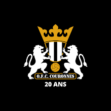
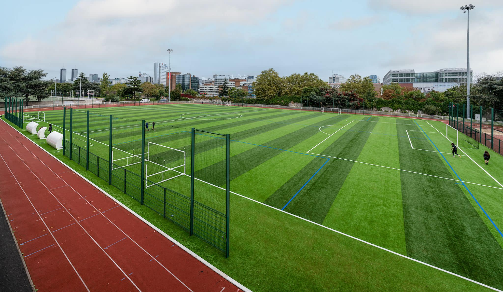

Olympique Football Club Couronnes
20e arrondissement · Paris

Équipe U8 - Saison 2025/2026

Notre stade : Maryse Hilsz, Paris 20e
NOTRE HISTOIRE
L'Olympique Football Club de Couronnes (OFCC) a vu le jour le 21 avril 2000 dans le quartier du 20e arrondissement de Paris nommé "Couronnes". Le club est affilié depuis lors à la Fédération Française de Football sous le numéro 548744.
Depuis plus de 25 ans, notre club forme les jeunes du quartier aux valeurs du football : respect, solidarité, dépassement de soi et plaisir du jeu. Nos équipes U8 s'entraînent toute l'année au stade Maryse Hilsz et participent aux plateaux et matchs amicaux de la région parisienne.
MATCHS SAISON 2025/2026
| Date | Adversaire | Compétition | Lieu | Statut |
|---|
THÈMES D'ENTRAÎNEMENT 2025/2026
Tous les mercredis et vendredis · RDV 17h45 · Séance 18h05-19h15 · Stade Maryse Hilsz
NOUS TROUVER
Adresse
7 Rue Henri Poincaré
75020 Paris
secretariat@ofccouronnes.com
Téléphone
07 68 38 63 19